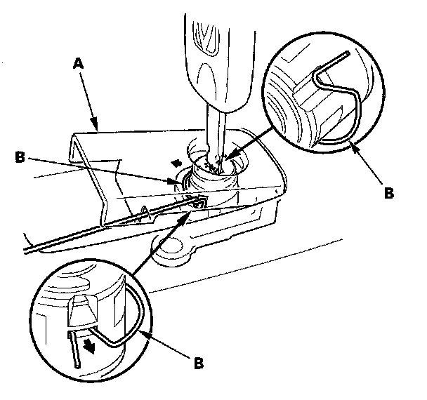
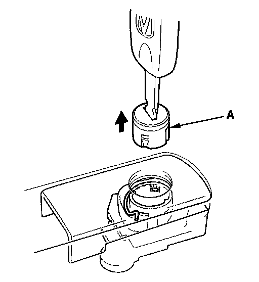
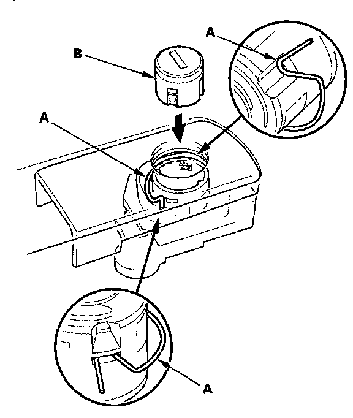

Glove Compartment Lock Cylinder: Service and Repair
Glove Box Lock Cylinder ReplacementNOTE: Take care not to scratch the glove box.
1. Remove the glove box.

2. Lift the glove box handle (A), and use a hook-shaped tool to pull one end of the retainer (B) out of its slot.
NOTE: Do not remove the retainer entirely. Leave one end of the retainer in its original position when removing the lock cylinder.

3. Remove the glove box lock cylinder (A).

4. Reinstall the end of the retainer (A) in its slot, then reinstall the lock cylinder (B). Push the cylinder into place securely until the retainer snaps into place.